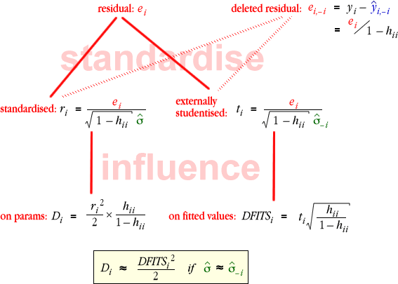

Summary
The diagram below shows how the residuals and measures of influence are related.

Reason for using these diagnostic summaries
Why have we defined residuals, leverage and influence? Are the problems not evident by looking at a scatterplot?
Yes, high-leverage points, outliers and influential points (high leverage and large residuals) are usually evident in a scatterplot for simple linear regression with a single explanatory variable.
However for more advanced models in which the response depends on two or more explanatory variables, it will be much harder to just 'look at the data'. For these models, outliers, high-leverage points and influential points must be detected from summary statistics, such as ti, hii and DFITSi.
Examples
The diagram below shows diagnostics for outliers, leverage and influence in several data sets.
The stacked dot plots on the left show the externally studentised residuals, leverages and DFITS, with shaded bands corresponding to the usual guidelines for 'extreme' values. Click any cross to highlight all three diagnostics for that observation.
Simply from an examination of these diagnostic summaries, it is possible to obtain information about the adequacy of the model and the influence that a single point may have on the results. (Click Peek at data to see a scatterplot of the data that helps to explain the conclusion.)
Select other data sets from the pop-up menu and check the conclusions.